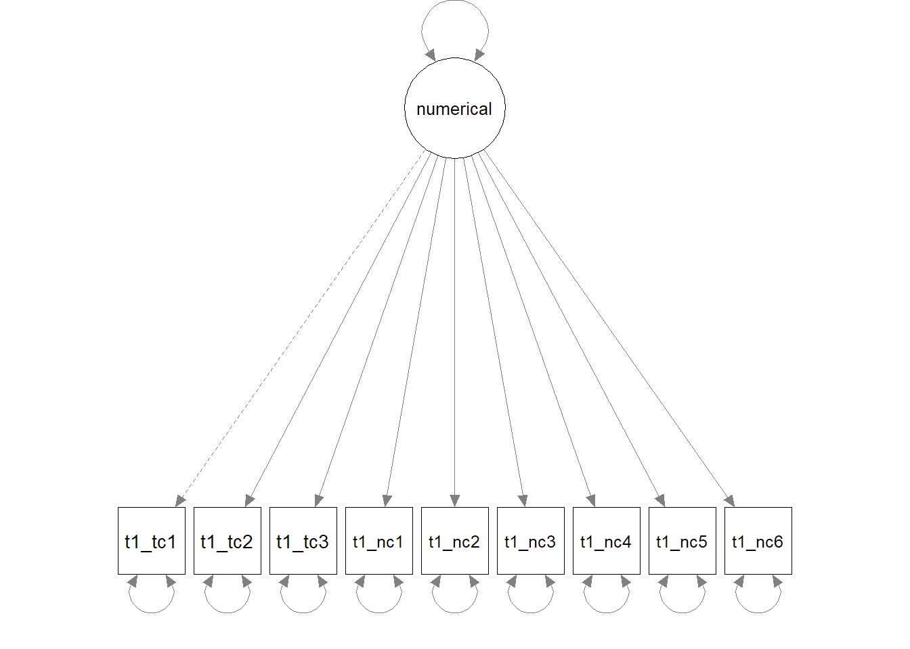
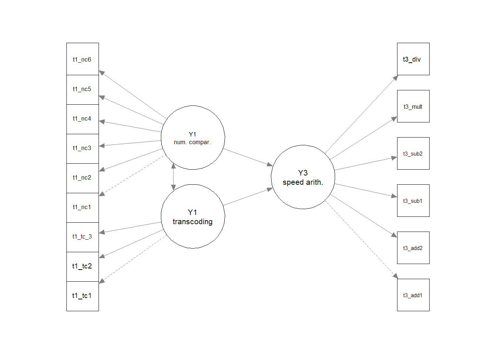

# Load packages
library(lavaan)
library(semPlot)1 Introduction
In this practical, we will use tools from the lavaan package to fit a structural equation model. We will first look at how to construct latent variables using confirmatory factor analysis, and then use these latent variables to predict performance on another measure.
Structural equation modelling is a particularly popular technique in developmental psychology, allowing researchers to test how particular traits or abilities measured early in development can predict subsequent outcomes. For today’s practical, we will analyse data collected in the Numerical Cognition Lab led by Professor Silke Goebel. The project looked at whether children’s numeric and cognitive skills measured in Year 1 predicted mathematical performance in Year 3.
The team have shared their data openly on the Open Science Framework (we’ll talk more about this in Lecture 11). We will be loading and working with a subset of the available data today, which have been relabelled to make their relationship to one another transparent for the practical.
Learning objectives
As a reminder, this week’s learning objectives are to:
- Differentiate between univariate and multivariate analytical approaches
- Describe the measurement and structural components of SEM
- Outline the five key stages involved in conducting SEM
- Understand how to read a path model
- Discuss factors that affect the implementation and generalisability of SEM
2 Set up
2.1 Create a script
Start with the usual set-up steps for the practical sessions:
- Open your ARM_Practicals.Rproj file in RStudio
- Create a new script and save it in your scripts/ folder as ARM7_SEM.R
- Download the data for the Week 7 practical from the VLE, and save it in your data/ folder.
Tip
If you don’t have this folder on your current machine, repeat the set-up steps outlined in 0_SetUp.pdf from Week 1.
2.2 Load packages
We will be using two packages today, lavaan and semPlot. Install them in the usual way, using install.packages() or the Packages tab.
Once they are installed, add the following lines at the top of your script to load them ready for today.
2.3 Load data
Once you have downloaded and saved the data from the VLE, you can load it into R as follows:
# Load data
maths_dat <- read.csv("./data/ARM7_data_maths.csv")Inspect the maths_dat dataset you have now loaded. You’ll notice that there are many more variables compared to previous weeks—18 to be precise, yet this is only a subset of the available data! Variables labelled with t1 correspond to measures administered when the children were in Year 1; variables labelled with t3 correspond to measures administered when the children were in Year 3. You should see the following variables:
- id: a unique identifier for each participant
- t1_age_m: age in months at T1
- t1_tc*: variables corresponding to the transcoding of numbers at T1, including writing, identification, and reading
- t1_nc*: variables corresponding to number comparison tasks at T1, including symbolic (numbers) and non-symbolic (dot) comparisons, with comparisons that were closer and further apart.
- t3_mr: mathematical reasoning ability at T3
- The final six columns reflect additional speeded arithmetic measures at T3. These are only relevant for the “Challenge yourself” task at the end.
3 Measurement model
Let’s start by focusing on the latent variables for the early numerical skills. There are nine different measures that were selected to capture variability in these early skills. We assume that they index one or more underlying “numerical abilities” in children, which lead children to perform differently across these measures.
Try using the cor() command to inspect the relationships between these different variables. You can select only the relevant columns of the dataset using maths_dat[, 3:11].
At first glance, it looks like the transcoding (t1_tc*) tasks might be more highly correlated with each other than with the number comparison (t1_nc*) tasks. We will use a confirmatory factor analysis to test whether these nine measures best reflect a single “numerical skill” ability or two different abilities.
Top tip!
If you find the correlation table hard to read, you could use the round() function to round the output to 2 decimal places as follows: round(cor(maths_dat[, 3:11]), 2). R whizzes amongst you could also use Google to find out how to visualise a correlation matrix.
3.1 One-factor solution
3.1.1 Model specification
Our first step to constructing the measurement model is model specification. In the simplest case here, we have one latent variable which predicts performance on all nine measures.
We can specify this as follows:
# Specify model formula
numerical_1f <- "numerical =~ t1_tc1 + t1_tc2 + t1_tc3 +
t1_nc1 + t1_nc2 + t1_nc3 +
t1_nc4 + t1_nc5 + t1_nc6"
Keyboard shortcuts
Note that the usual Ctrl+Enter keyboard shortcut does not work so well for these model formulas. You will either need to (1) repeat the shortcut as it progresses through each line of code; (2) highlight the whole chunk before using the keyboard shortcut; or (3) highlight the whole chunk and click run.
We give our latent variable a name, numerical, and specify that it is measured by (=~) the nine variables that we have listed by name (separated by the + operator). We’ve stored this formula as an object in R, called numerical_1f, ready to use in model fitting.
The model we are fitting therefore looks like this:

3.1.2 Model identification
We won’t worry too much about model identification here—we would get an error message if this was a problem! But just so that you have a worked example and you can interpret the model information below, we can see that the model is (over-)identified as follows:
Number of data points: N = (p*(p+1))/2), where p is the number of measured variables. We have 9 measured variables (3 transcoding tasks, 6 number comparison tasks), so this can be expanded as follows:
- N = (9*(9+1))/2 = 45
Number of parameters: you can see in the diagram that the first loading is fixed to 1 by default (the marker method described in the lecture), as represented by the dashed line. We count the remaining free parameters to be estimated, including the remaining factor loadings (8), variance of latent variables (1), and error variance for each measured variable (9) = 18 free parameters to be estimated
Degrees of freedom: Number of data points (45) - Number of parameters (18) = 27.
- The model is over-identified (= good).
3.1.3 Model estimation and evaluation
Now we’ve specified our model and checked its suitability, the next step is model estimation. Let’s fit it to the data!
# Fit model
fit_1f <- cfa(numerical_1f, data = maths_dat)
# Print output including fit indices
summary(fit_1f, fit.measures = TRUE)We use the cfa() function here as we are only testing the relationship between the latent variable(s) and measured variables, via a confirmatory factor analysis.
The first section of the model output tells us about the model fitting process, including the number of iterations needed to fit the model alongside the estimator and optimization method used. You can also see the number of observations included (you should see that this matches the number of rows in your dataset) alongside the number of model parameters and degrees of freedom as we counted up above.
We specified that we wanted measures of model fit to be included in our output, and so the next section shows a number of fit indices—including CFI, TLI, and RMSEA as we discussed in the lecture. Based on your notes, do you think this model is a good fit?
3.2 Two-factor solution
Before we delve into exploratory model modification steps, we can already consider an alternative model based on theory. In this case, the researchers expected that transcoding and number comparison reflect separate skills, and we could see this in the task correlations.
Let’s specify and fit a two-factor solution based on this theory. We can estimate the transcoding latent variable from the three measures of transcoding (t1_tc*), and num_comparison latent variable from the remaining six tasks (t1_nc*). We won’t check model identification manually this time, but we will be able to see this information in the output.
# Specify 2-factor model
numerical_2f <- "transcoding =~ t1_tc1 + t1_tc2 + t1_tc3
num_comparison =~ t1_nc1 + t1_nc2 + t1_nc3 +
t1_nc4 + t1_nc5 + t1_nc6"
# Fit model
fit_2f <- cfa(numerical_2f, data = maths_dat)
# Inspect output, including fit indices
summary(fit_2f, fit.measures = TRUE)What do you think of the new model fit?
The bottom section of the output specifies the parameter estimates for the model. It can be easier to interpret these on a plot, which you can create using the following line of code:
# Plot model
semPaths(fit_2f, whatLabels = "std")We’ve specified that the parameter estimates are presented in standardised format so that we can compare the estimates across different variables. You can change the whatLabels argument to “par” if you want them to be in the original units of the variables (as presented in the CFA output by default).
3.3 Model modification
The above 2-factor model looks to be a pretty good fit. For the sake of this practical, let’s consider whether there’s any other parameters we could add to make it even better.
The standardised parameters indicate that the factor loadings are all sensible, and so we should keep all the tasks in the model. But what about extra parameters? We can ask lavaan to show us the change in chi-square statistic when different possible parameters are added. We specify sort = true so that it shows us the biggest improvements at the top of the list:
# Modification indices
modindices(fit_2f, sort = TRUE)The output tells us that the largest change (mi) would come from adding a covariance (~~) between the variables t1_nc1 and t1_nc6. You can try adding this to your model formula, and inspect the resulting model fit:
# Specify new model formula with covariance
numerical_2f_m <- "transcoding =~ t1_tc1 + t1_tc2 + t1_tc3
num_comparison =~ t1_nc1 + t1_nc2 + t1_nc3 +
t1_nc4 + t1_nc5 + t1_nc6
t1_nc1 ~~ t1_nc6"
# Fit model
fit_2f_m <- cfa(numerical_2f_m, data = maths_dat)
# Inspect output, including fit indices
summary(fit_2f_m, fit.measures = TRUE)However, we would only want to proceed with adding model parameters if they make theoretical sense: there might not be an intuitive explanation for the errors to be correlated in these two tasks beyond other tasks. Indeed, the model fit was already very good without this additional parameter, and adding more parameters risks overfitting (i.e., the model would become less able to generalise to new datasets). In this case, the simpler 2-factor model is preferred.
4 Structural model
Now we have successfully modelled the latent constructs relating to early numeric skills, we can see whether they relate to long-term mathematical performance. The researchers followed up the same children two years later to see how Year 1 abilities predicted mathematical reasoning in Year 3.
4.1 Predicting mathematical reasoning from early numeric skills
In our new model formula, we should specify how our latent constructs are measured just as we did before. However, we can now add a structural part to test whether mathematical reasoning (t3_mr) is predicted by (~) our two latent variables. This part of the model formula should feel familiar—we’ve been writing model formulas in similar ways in earlier practicals.
Specify the model, and use the sem() function this time to fit it.
# Longitudinal model specification
pred_mr <- " # measurement model
transcoding =~ t1_tc1 + t1_tc2 + t1_tc3
num_comparison =~ t1_nc1 + t1_nc2 + t1_nc3 +
t1_nc4 + t1_nc5 + t1_nc6
# regressions
t3_mr ~ transcoding + num_comparison"
# Fit model
fit_predict <- sem(pred_mr, data = maths_dat)Inspect the model fit as before, and plot the path diagram.
Is the model a good fit to the data? Which early skills are the stronger predictor of mathematical reasoning performance?
4.2 Dealing with missing data
Take a look at your SEM model output. What do you notice about the number of observations used in the model, relative to when we fitted the measurement model using only Year 1 data?
In the lecture, we mentioned some possible ways of dealing with missing data, including using a different fitting algorithm called Full Information Maximum Likelihood. While these techniques require several assumptions about the nature of missingness in the dataset, the actual implementation using lavaan is surprisingly simple: we just need to add an argument within the sem() to specify that we want missingness to be addressed using (full information) maximum likelihood estimation. Try adding missing = "ML" to your SEM model above, and inspect the results.
5 Summary
In this practical, we have walked through the five stages of structural equation modelling (specification, identification, estimation, evaluation, and modification). We focused first on a basic measurement model to determine the latent constructs in the data, and then saw how these can be incorporated in a structural model to predict longitudinal outcomes. We focused on a single measured outcome variable today, but it’s a good idea to look at some recent papers that use structural equation modelling to see just how flexible and powerful this technique can be for modelling complex datasets.
5.1 Challenge yourself
Mathematical reasoning is only one aspect of mathematical ability in developing learners. The researchers were also interested in speeded arithmetic skills, which they measured in Year 3 using 6 different tasks (labelled t3_add1, t3_add2, t3_sub1, t3_sub2, t3_mult, t3_div).
Fit a new model in which your early numeric skills (transcoding, number comparison) predict subsequent performance in speeded arithmetic, captured by a third latent variable (as depicted below). You will need to specify how this latent variable is measured, and then use it in a regression path.

5.2 Further learning
This week’s core reading is on the VLE, and there are plenty of Quantitude podcasts relating to SEM issues if you want to add some variety to your learning. If you want to gain more interactive experience, there’s a whole DataCamp course on Structural Equation Modelling with lavaan in R.
How’s it going?
Let us know how today went via this quick survey—rate the difficulty and length, and leave any comments that would help for us to know (positive comments welcome too!). You will need to be logged in with your university account to respond, but your submission is anonymous.
For more general questions about the practical, please post them on the VLE Discussion Board.